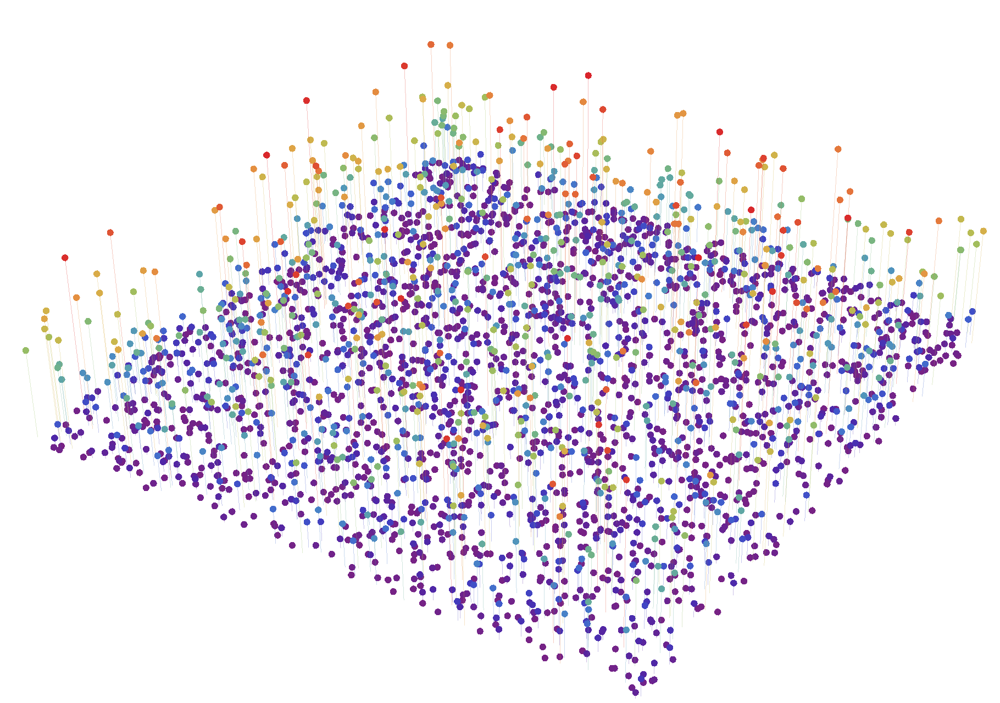
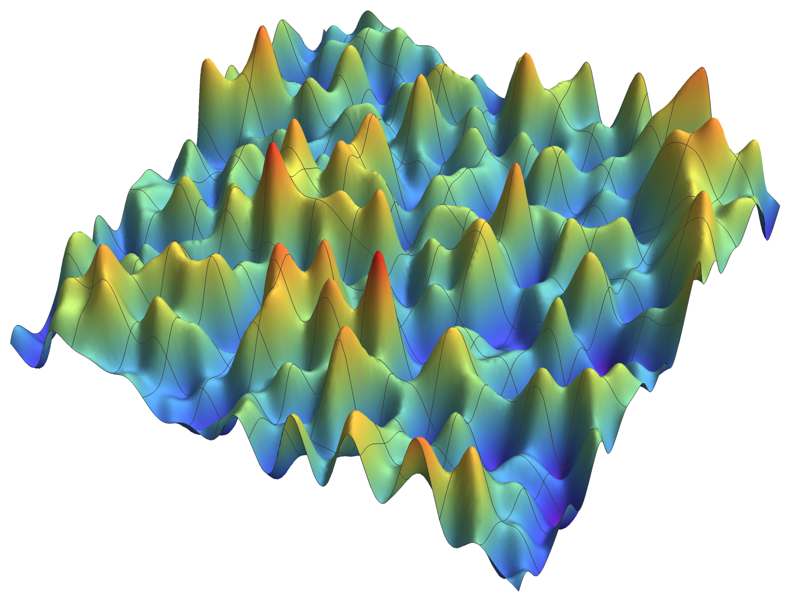
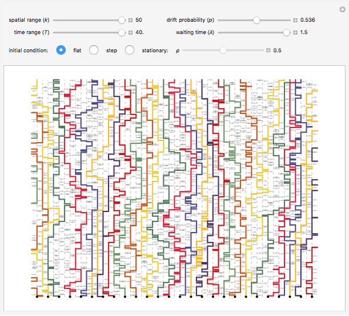
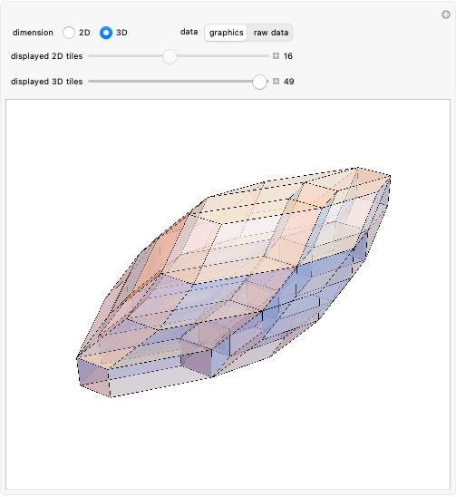

About
Tenure-track Assistant Professor
Department of Mathematics
Università degli Studi di Roma “Tor Vergata”
My main research interest lies in diffusion processes on infinite-dimensional and non-smooth spaces (spaces of measures, configuration spaces, metric measure spaces) and the geometry these spaces carry, using Dirichlet forms, optimal transport, and metric measure geometry.
Recent work includes a unifying theory of massive particle systems, Wasserstein Brownian motions, and the Dean–Kawasaki equation; the ill-posedness of the pure-noise Dean–Kawasaki equation (with V. Konarovskyi); conformally invariant random fields on even-dimensional manifolds (with R. Herry, E. Kopfer, and K.-T. Sturm); and a series on configuration spaces over singular spaces (with K. Suzuki).
Until October 2024 I was at the Institute of Science and Technology Austria (ISTA): first as a postdoctoral researcher in the group of Jan Maas, then as principal investigator of the FWF ESPRIT project Configuration Spaces over non-smooth Spaces. I obtained my doctoral degree at IAM Bonn in the group of Karl-Theodor Sturm, and my bachelor’s and master’s degrees at Sapienza University in Rome under the supervision of Adriano Pisante.
My CV can be downloaded here: CV (PDF).
Grants and distinctions
- FWF ESPRIT Fellowship, principal investigator (2022–2024)
- APART-MINT Fellowship of the Austrian Academy of Sciences, awarded 2022 (declined)
- Royal Society International Exchanges, co-applicant with Federico Cornalba (2025–2027)
- CNRS Postes Rouges, Université de Haute-Alsace, co-applicant with Nicolas Juillet (2026)
- Adjunct member of the DFG Priority Programme SPP 2265 Random Geometric Systems
Details in Research › Funding.
News
- Dec, 2026 — Dec, 2027
- Visiting PhD student Boyi Hou (侯博译, Hóu Bóyì), School of Mathematics, Dalian University of Technology, CN
- Nov 24, 2026
- Séminaire Calcul stochastique, IRMA – Université de Strasbourg, FR
- Nov 19, 2026
- Séminaire Probabilités et Statistique, Institut Élie Cartan de Lorraine, Nancy, FR
- Oct 20–23, 2026
- Co-organized the workshop Nonlinear Markov Processes, Dirichlet Forms, and PDEs, Bernoulli Center, EPFL
- Jul 2026
- New preprint with A. Pinamonti: A ‘global’ Perspective on the Differential Geometry of Wasserstein Spaces
Selected papers
- The Dirichlet–Ferguson Diffusion on the Space of Probability Measures over a Closed Riemannian Manifold, The Annals of Probability (2022)
- Conformally Invariant Random Fields, Quantum Liouville Measures, and Random Paneitz Operators on Riemannian Manifolds of Even Dimension, with R. Herry, E. Kopfer, K.-T. Sturm, Journal of the London Mathematical Society (2024)
- Persistence of Rademacher-type and Sobolev-to-Lipschitz properties, with K. Suzuki, Advances in Mathematics (2025)
- Massive Particle Systems, Wasserstein Brownian Motions, and the Dean–Kawasaki Equation, preprint (2024)
Students
I accept Master’s and PhD students. Possible thesis topics, which can be adapted to the student’s level and interests, include:
- diffusion processes on spaces of measures: Wasserstein diffusions, the Dean–Kawasaki equation, interacting particle systems and their scaling limits;
- optimal transport and the geometry of Wasserstein and Hellinger–Kantorovich spaces;
- Dirichlet forms, bilinear and non-linear, and Markov processes on non-smooth spaces;
- configuration spaces, point processes, and infinite particle systems;
- random Riemannian geometry: log-correlated Gaussian fields and Liouville quantum gravity.
If you are interested, please write to me with a CV and a few lines about your interests.
Research
I work at the interface between analysis, probability, and geometry. The common thread of my current research is the construction and study of Markov diffusions on infinite-dimensional and non-smooth spaces — spaces of measures, configuration spaces, general metric measure spaces — and of the geometry these spaces carry, using Dirichlet forms, optimal transport, and metric measure geometry. Links below open the corresponding entries in the list of publications.
In plain words. Many systems in physics and biology consist of a huge number of particles moving at random: molecules in a fluid, cells in a tissue. The state of such a system is best described not by a point but by a distribution of mass, a measure. I study random motions on spaces whose points are measures, and the geometry of these spaces: how to measure the distance between two distributions (optimal transport), how heat and randomness spread on them, and what curvature means on spaces that are infinite-dimensional or have no smooth structure.
Wasserstein Diffusions, Particle Systems, and the Dean–Kawasaki Equation

My PhD thesis constructs the Dirichlet–Ferguson diffusion, a canonical diffusion on the $L^2$-Wasserstein space $\mathscr{P}_2(M)$ over a closed Riemannian manifold $M$ of dimension $d\geq 2$, reversible with respect to the Dirichlet–Ferguson measure. It is the multi-dimensional counterpart of Konarovskyi’s Modified Massive Arratia Flow.
More recently, I developed a unifying theory for four objects: infinite systems of interacting massive particles, solutions to the Dean–Kawasaki equation with singular drift, Wasserstein diffusions with purely atomic reversible random measures, and metric measure Brownian motions on $L^2$-Wasserstein spaces. The theory works on general locally compact Polish spaces, with the Laplacian replaced by an arbitrary diffusive Markov generator $\mathsf{L}$, and includes singular mean-field interactions of Riesz and logarithmic type. Each such $\mathsf{L}$ induces a geometry on the space of probability measures, which reduces to $L^2$-optimal transport when $\mathsf{L}$ is a drifted Laplace–Beltrami operator. With V. Konarovskyi, I showed that the pure-noise Dean–Kawasaki equation is ill-posed: it has no solutions for any initial measure and any bounded drift, a sharp result.
I am also interested in scaling limits of interacting particle systems. With L. Portinale and F. Sau, I derived the hydrodynamic and hydrostatic limits of the open symmetric exclusion and inclusion processes on Lipschitz domains, with Neumann, Robin, or Dirichlet boundary conditions depending on the strength of the boundary reservoirs.
Geometry of Spaces of Measures
I study the differential and metric measure structure of spaces of measures, starting from a Rademacher-type theorem on $\mathscr{P}_2(M)$. With G.E. Sodini, I showed that the space $\mathcal{M}(M)$ of all non-negative measures on a Riemannian manifold, endowed with the Hellinger–Kantorovich distance, is universally infinitesimally Hilbertian, and that its canonical Dirichlet form with respect to Vershik’s multiplicative infinite-dimensional Lebesgue measure $\mathcal{L}_\theta$ coincides with the Cheeger energy. The associated Brownian motion is recurrent if and only if $\theta\in(0,1]$. With A. Pinamonti, I am developing a global differential calculus on the Wasserstein space, based on derivations of cylinder functions. In this framework the Levi-Civita connection and the Riemann tensor of the base manifold lift to the Wasserstein space, and the correction terms of the classical gradient formalism come from the projection onto the gradient distribution rather than from intrinsic curvature.
Configuration Spaces
Together with Kohei Suzuki, I am developing a series of works on the configuration space $\Upsilon$ over a metric measure space $X$. Here $\Upsilon$ is endowed with the $L^2$-transportation distance $\mathsf{d}_\Upsilon$ and with a reference measure $\mu$, such as a Poisson, Gibbs, or quasi-Gibbs measure (e.g. sine$_\beta$, Airy$_\beta$, Bessel, Ginibre). In the first part we construct the canonical differential structure on $\Upsilon$, showing that the Dirichlet form lifted from $X$ coincides with the Cheeger energy of $(\Upsilon,\mathsf{d}_\Upsilon,\mu)$, with no smoothness of $X$ and no quasi-invariance of $\mu$ required. In the second part we transfer Bakry–Émery curvature bounds from $X$ to $\Upsilon$ and prove the Sobolev-to-Lipschitz property conjectured by M. Röckner and A. Schied. With R. Herry and K. Suzuki, I constructed an optimal-transport geometry on the Poisson space, for which the Ornstein–Uhlenbeck semigroup is the gradient flow of the relative entropy and the Ricci curvature is bounded below by $1$.
Dirichlet Forms, Linear and Non-linear
Much of the above rests on results for Dirichlet spaces in full generality. With K. Suzuki, I studied the Rademacher and Sobolev-to-Lipschitz properties of intrinsic distances, their persistence under localization, tensorization, and direct integration, and the resulting Varadhan short-time asymptotics. I also constructed ergodic decompositions of quasi-regular Dirichlet spaces, and studied their behavior under order isomorphisms with M. Wirth.
A newer direction is non-linear. With G. Brigati, I contributed to the foundations of a theory of non-bilinear Dirichlet functionals on Hilbert spaces, with complete characterizations of Markovianity, invariance, and (strong) locality. In October 2026 I co-organized, with M. Braun, G. Brigati, and M. Rehmeier, the workshop Nonlinear Markov Processes, Dirichlet Forms, and PDEs at the Bernoulli Center, EPFL.
Gradient Flows and Synthetic Curvature
I am interested in gradient flows of functionals on metric spaces. With J. Maas and F. Pedrotti, I gave local conditions of Kurdyka–Łojasiewicz type, stated only in terms of the initial datum, for the global convergence of gradient flows and proximal point sequences, with sharp rates. With M. Magnabosco and C. Rigoni, I studied $(K,N)$-convex functionals with negative $N$, which may take both values $\pm\infty$, proving contractivity, regularity, and uniqueness of their gradient flows in the sense of Evolution Variational Inequalities.
Random Riemannian Geometry

As an adjunct member of project 15 Random Riemannian Geometry of the DFG Priority Programme SPP 2265, I work with R. Herry, E. Kopfer, and K.-T. Sturm on random geometries over manifolds of arbitrary even dimension $n$. Replacing the Laplace–Beltrami operator with its conformally covariant counterpart, the GJMS operator of critical order $n$, we construct conformally invariant log-correlated Gaussian fields, the associated quantum Liouville measures and Liouville Brownian motion, and a Polyakov–Liouville measure with its conformal anomaly. On tori of arbitrary dimension we proved the discrete-to-continuum convergence of polyharmonic fields and of their Liouville Quantum Gravity measures for all $|\gamma|<\sqrt{2n}$. In the regular regime, Fractional Gaussian Fields give random conformal perturbations of a Riemannian metric, and we study how diameter, volume, heat kernel, and spectral gap respond to the noise.
Random Measures and Exchangeable Partitions
The Dirichlet–Ferguson measure, the invariant measure of the diffusion above, is a central object in Bayesian non-parametrics and in the theory of random measures; I computed its characteristic functional over locally compact Polish spaces. With F. Quattrocchi, I introduced polychromatic partitions, partitions of colored elements in which each block records only how many elements of each color it contains. We define a polychromatic Ewens Sampling Formula and Hoppe urn, and prove a complete Kingman-type characterization of polychromatic partition structures, with applications to the moments of random measures.
Funding and Research Networks
I am an adjunct member of the DFG Priority Programme SPP 2265 Random Geometric Systems, in project 15 Random Riemannian Geometry. At ISTA I was a member of the Sfb 65 Taming Complexity in Partial Differential Systems, and at IAM Bonn of the Sfb 1060 The Mathematics of Emergent Effects, in project B03 Optimal transport and random measures. My research has further been supported by the following grants and programs.
- CNRS Postes Rouges (2026): research stay at the Université de Haute-Alsace, Mulhouse, October 1 – December 1, 2026. Total funding: about €6,000
- Royal Society International Exchanges (IES\R2\252126, 2025–2027): SPDEs for Fluctuating Hydrodynamics: Efficient simulation of multi-scale multi-species particle systems, co-applicant with Federico Cornalba (University of Bath) as lead applicant. Total funding: £11,650
- FWF ESPRIT Program (ESP 208): Configuration Spaces over non-smooth Spaces, principal investigator, with Jan Maas as mentor. Duration: July 1, 2022 – November 3, 2024 Total funding: €294,015.98
- APART-MINT Fellowship of the Austrian Academy of Sciences (2022): Multi-dimensional Wasserstein Diffusions, awarded and declined. Total funding: €70,000
- MFO Research in Pairs (2021): research stay with Kohei Suzuki at the Mathematisches Forschungsinstitut Oberwolfach, November 21 – December 18, 2021.
Publications
How to cite.
My surname is Dello Schiavo: two words, one surname.
Because of arXiv’s incorrect indexing of author names, the BibTeX records generated by arXiv for my works are not correct, and I cannot fix them.
Please use the BibTeX record given with each paper below, or write author={Dello Schiavo, Lorenzo and ...} (and do not forget my co-authors).
Click a title to read the abstract.
Preprints
-
Preprint (2026)arXiv
We develop a global differential calculus on the $L^2$-Wasserstein space over a closed Riemannian manifold, based on derivations of cylinder functions rather than on the standard pointwise approach. Within this framework we define some fundamental geometric tools. In particular, we show that the Levi-Civita connection on the base manifold lifts to the unique torsion-free connection compatible with the “extended” Otto metric. The corresponding Riemann tensor is exactly the lift of the base Riemann tensor, which shows that — in this framework — the correction terms of the classical gradient formalism are not intrinsic curvature terms, but arise from the projection onto the measure-dependent gradient distribution. This allows us to revisit with a global and purely differential approach the smooth computations by J. Lott, Comm. Math. Phys., 277(2):423-437, 2007, reaching partially different conclusions.
@misc{DelloSchiavoPinamonti2026Global, author = {Dello Schiavo, Lorenzo and Pinamonti, Andrea}, title = {A `global' Perspective on the Differential Geometry of {W}asserstein Spaces}, year = {2026}, note = {Preprint, arXiv:2607.27121}, eprint = {2607.27121}, archivePrefix = {arXiv} } -
Preprint (2025)arXiv
We present in a unified setting the foundations for a theory of non-bilinear Dirichlet functionals on Hilbert spaces. We prove known and new equivalences between non-linear semigroups, non-linear resolvents, non-linear generators, and their energy functionals, including a complete characterization of Markovianity. We introduce and characterize strong notions of invariance for general lower semicontinuous convex functionals, and notions of locality and strong locality for non-bilinear Dirichlet functionals. Contrary to many partial results in the literature, these characterizations are complete and correctly extend the analogous assertions for the bilinear case in full generality.
@misc{BrigatiDelloSchiavo2025Nonbilinear, author = {Brigati, Giovanni and Dello Schiavo, Lorenzo}, title = {Non-bilinear {D}irichlet Functionals: {M}arkovianity, locality, invariance}, year = {2025}, note = {Preprint, arXiv:2510.02942}, eprint = {2510.02942}, archivePrefix = {arXiv} } -
Preprint (2025)arXiv
Let $(M,g)$ be a Riemannian manifold with Riemannian distance $\mathsf{d}_g$, and $\mathcal{M}(M)$ be the space of all non-negative Borel measures on $M$, endowed with the Hellinger–Kantorovich distance $\mathsf{H\! K}_{\mathsf{d}_g}$ induced by $\mathsf{d}_g$. Firstly, we prove that $(\mathcal{M}(M),\mathsf{H\! K}_{\mathsf{d}_g})$ is a universally infinitesimally Hilbertian metric space, and that a natural class of cylinder functions is dense in energy in the Sobolev space of every finite Borel measure on $\mathcal{M}(M)$. Secondly, we endow $\mathcal{M}(M)$ with its canonical reference measure, namely A.M. Vershik’s multiplicative infinite-dimensional Lebesgue measure $\mathcal{L}_\theta$, $\theta>0$, and we consider: (a) the geometric structure on $\mathcal{M}(M)$ induced by the natural action on $\mathcal{M}(M)$ of the semi-direct product of diffeomorphisms and densities on $M$, under which $\mathcal{L}_\theta$ is the unique invariant measure; and (b) the metric measure structure of $(\mathcal{M}(M),\mathsf{H\! K}_{\mathsf{d}_g},\mathcal{L}_{\theta})$, inherited from that of $(M,\mathsf{d}_g,\mathrm{vol}_g)$. We identify the canonical Dirichlet form $(\mathcal{E},\mathscr{D}(\mathcal{E}))$ of (a) with the Cheeger energy of (b), thus proving that these two structures coincide. We further prove that $(\mathcal{E},\mathscr{D}(\mathcal{E}))$ is a conservative quasi-regular strongly local Dirichlet form on $\mathcal{M}(M)$, recurrent if and only if $\theta\in (0,1]$, and properly associated with the Brownian motion of the Hellinger–Kantorovich geometry on $\mathcal{M}(M)$.
@misc{DelloSchiavoSodini2025HellingerKantorovich, author = {Dello Schiavo, Lorenzo and Sodini, Giacomo Enrico}, title = {The {H}ellinger--{K}antorovich metric measure geometry on spaces of measures}, year = {2025}, note = {Preprint, arXiv:2503.07802}, eprint = {2503.07802}, archivePrefix = {arXiv} } -
Preprint (2024)arXiv
We develop a unifying theory for four different objects:
- infinite systems of interacting massive particles;
- solutions to the Dean–Kawasaki equation with singular drift and space-time white noise;
- Wasserstein diffusions with a.s. purely atomic reversible random measures;
- metric measure Brownian motions induced by Cheeger energies on $L^2$-Wasserstein spaces.
For the objects in (1)-(3) we prove existence and uniqueness of solutions, and several characterizations, on an arbitrary locally compact Polish ambient space $M$ with exponentially recurrent Feller driving noise. In the case of the Dean–Kawasaki equation, this amounts to replacing the Laplace operator with some arbitrary diffusive Markov generator $\mathsf{L}$ with ultracontractive semigroup. In addition to a complete discussion of the free case, we consider singular interactions, including, e.g., mean-field repulsive isotropic pairwise interactions of Riesz and logarithmic type under the assumption of local integrability. We further show that each Markov diffusion generator $\mathsf{L}$ on $M$ induces in a natural way a geometry on the space of probability measures over $M$. When $M$ is a manifold and $\mathsf{L}$ is a drifted Laplace–Beltrami operator, this geometry coincides with the geometry of $L^2$-optimal transportation. The corresponding “geometric Brownian motion” coincides with the “metric measure Brownian motion” in (4).
@misc{DelloSchiavo2024Massive, author = {Dello Schiavo, Lorenzo}, title = {Massive Particle Systems, {W}asserstein {B}rownian Motions, and the {D}ean--{K}awasaki Equation}, year = {2024}, note = {Preprint, arXiv:2411.14936}, eprint = {2411.14936}, archivePrefix = {arXiv} } -
Preprint (2023)arXiv
A polychromatic partition is a partition of a set of colored (marked) elements in which each block is recorded only by the number of elements of each color in that block. We introduce a notion of polychromatic partition structure, i.e. a family of random polychromatic partitions consistent under deletion of elements uniformly at random, simultaneously extending (standard) partition structures, multipartition structures, and partition structures of partially exchangeable type. As an example thereof, we define a polychromatic analogue of the celebrated Ewens Sampling Formula, proving polychromatic versions of Kingman’s characterization and of Hoppe’s urn model. As our main result, we give a complete characterization of polychromatic partition structures, proving a triple affine homeomorphism of Bauer simplices among: polychromatic partition structures, harmonic densities for the polychromatic Hoppe urn, and probability measures on a polychromatic Kingman simplex. Additionally, we prove that this new simplex is homeomorphic to the Martin boundary of the polychromatic Hoppe urn inside its Martin compactification. We discuss various applications including closed non-recursive non-iterative expressions for multivariate moments of several random measures in terms of cycle index polynomials whose monomials are indexed by polychromatic partitions.
@misc{DelloSchiavoQuattrocchi2023Polychromatic, author = {Dello Schiavo, Lorenzo and Quattrocchi, Filippo}, title = {Polychromatic Partitions, {K}ingman Theory, and {E}wens Sampling Formula}, year = {2023}, note = {Preprint, arXiv:2309.11292}, eprint = {2309.11292}, archivePrefix = {arXiv} } -
Preprint (2022)arXiv
This is the second paper of a series on configuration spaces $\Upsilon$ over singular spaces $X$. Here, we focus on geometric aspects of the extended metric measure space $(\Upsilon, \mathsf{d}_{\Upsilon}, \mu)$ equipped with the $L^2$-transportation distance $\mathsf{d}_{\Upsilon}$, and a mixed Poisson measure $\mu$. Firstly, we establish the essential self-adjointness and the $L^p$-uniqueness for the Laplacian on $\Upsilon$ lifted from $X$. Secondly, we prove the equivalence of Bakry–Émery curvature bounds on $X$ and on $\Upsilon$, without any metric assumption on $X$. We further prove the Evolution Variational Inequality on $\Upsilon$, and introduce the notion of synthetic Ricci-curvature lower bounds for the extended metric measure space $\Upsilon$. As an application, we prove the Sobolev-to-Lipschitz property on $\Upsilon$ over singular spaces $X$, originally conjectured in the case when $X$ is a manifold by M. Röckner and A. Schied. As a further application, we prove the $L^\infty$-to-$\mathsf{d}_{\Upsilon}$-Lipschitz regularization of the heat semigroup on $\Upsilon$ and give a new characterization of the ergodicity of the corresponding particle systems in terms of optimal transport.
@misc{DelloSchiavoSuzuki2022Configuration, author = {Dello Schiavo, Lorenzo and Suzuki, Kohei}, title = {Configuration spaces over singular spaces --- {II}. {C}urvature}, year = {2022}, note = {Preprint, arXiv:2205.01379}, eprint = {2205.01379}, archivePrefix = {arXiv} } -
Preprint (2021)arXiv
This paper is the first in a series on configuration spaces over singular spaces. Here, we construct a canonical differential structure on the configuration space $\Upsilon$ over a singular base space $X$ and with a general invariant measure $\mu$ on $\Upsilon$.
We first present an analytic structure on $\Upsilon$, constructing a strongly local Dirichlet form $\mathcal E$ on $L^2(\Upsilon, \mu)$ for $\mu$ in a large class of probability measures. We then investigate the geometric structure of the extended metric measure space $\Upsilon$ endowed with the $L^2$-transportation extended distance $\mathsf{d}_\Upsilon$ and with the measure $\mu$. By establishing various Rademacher- and Sobolev-to-Lipschitz-type properties for $\mathcal E$, we finally provide a complete identification of the analytic and the geometric structure — the canonical differential structure induced on $\Upsilon$ by $X$ and $\mu$ — showing that $\mathcal E$ coincides with the Cheeger energy of $(\Upsilon,\mathsf{d}_\Upsilon,\mu)$ and that the intrinsic distance of $\mathcal E$ coincides with $\mathsf{d}_\Upsilon$.
The class of base spaces to which our results apply includes sub-Riemannian manifolds, $\mathsf{RCD}$ spaces, locally doubling metric measure spaces satisfying a local Poincaré inequality, and path/loop spaces over Riemannian manifolds; as for $\mu$, our results include Campbell measures and quasi-Gibbs measures, in particular: Poisson measures, canonical Gibbs measures, as well as some determinantal/permanental point processes (sine$_\beta$, Airy$_\beta$, Bessel$_{\alpha, \beta}$, Ginibre).
A number of applications to interacting particle systems and infinite-dimensional metric measure geometry are also discussed. In particular, we prove the quasi-regularity of $\mathcal E$ and consequently the existence of a Markov diffusion associated to $\mathcal E$ describing a $\mu$-invariant particle system. We further show the universality of the $L^2$-transportation distance $\mathsf{d}_\Upsilon$ for the Varadhan short-time asymptotics for diffusions on $\Upsilon$, regardless of the choice of $\mu$. Our approach does not rely on any relation between $\mu$ and a possible smooth structure on $X$. In particular, we assume no quasi-invariance property of $\mu$ w.r.t. actions of any group of transformations of $X$. Many of our results are new even in the case of standard Euclidean spaces.@misc{DelloSchiavoSuzuki2021Configuration, author = {Dello Schiavo, Lorenzo and Suzuki, Kohei}, title = {Configuration spaces over singular spaces --- {I}. {D}irichlet-Form and Metric Measure Geometry}, year = {2021}, note = {Preprint, arXiv:2109.03192}, eprint = {2109.03192}, archivePrefix = {arXiv} }
Journal articles
-
Calculus of Variations and Partial Differential Equations 65:90 (2026)arXiv journal, open access
We discuss $(K,N)$-convexity and gradient flows for $(K,N)$-convex functionals on metric spaces, in the case of real $K$ and negative $N$. In this generality, it is necessary to consider functionals unbounded from below and/or above, possibly attaining as values both the positive and the negative infinity. We prove several properties of gradient flows of $(K,N)$-convex functionals characterized by Evolution Variational Inequalities, including contractivity, regularity, and uniqueness.
@article{DelloSchiavoMagnaboscoRigoni2026Gradient, author = {Dello Schiavo, Lorenzo and Magnabosco, Mattia and Rigoni, Chiara}, title = {Gradient flows of $(K,N)$-convex functions with negative $N$}, journal = {Calculus of Variations and Partial Differential Equations}, volume = {65}, pages = {Paper No. 90}, year = {2026}, doi = {10.1007/s00526-025-03187-z}, eprint = {2412.04574}, archivePrefix = {arXiv} } -
Advances in Mathematics 481:110542 (2025)arXiv journal, open access
We consider the Rademacher- and Sobolev-to-Lipschitz-type properties for arbitrary quasi-regular strongly local Dirichlet spaces. We discuss the persistence of these properties under localization, globalization, transfer to weighted spaces, tensorization, and direct integration. As byproducts we obtain: necessary and sufficient conditions to identify a quasi-regular strongly local Dirichlet form on an extended metric topological $\sigma$-finite possibly non-Radon measure space with the Cheeger energy of the space; the tensorization of intrinsic distances; the tensorization of the Varadhan short-time asymptotics.
@article{DelloSchiavoSuzuki2025Persistence, author = {Dello Schiavo, Lorenzo and Suzuki, Kohei}, title = {Persistence of {R}ademacher-type and {S}obolev-to-{L}ipschitz properties}, journal = {Advances in Mathematics}, volume = {481}, pages = {Paper No. 110542}, year = {2025}, doi = {10.1016/j.aim.2025.110542}, eprint = {2309.10733}, archivePrefix = {arXiv} } -
Electronic Communications in Probability 30: paper no. 52 (2025)arXiv journal, open access
We prove that the Dean–Kawasaki-type stochastic partial differential equation $$ \partial \rho= \nabla\cdot (\sqrt{\rho\,}\, \xi) + \nabla\cdot \big(\rho\, H(\rho)\big) , $$ with vector-valued space-time white noise $\xi$, does not admit solutions for any initial measure and any vector-valued bounded measurable function $H$ on the space of measures. This applies in particular to the pure-noise Dean–Kawasaki equation ($H \equiv 0$). The result is sharp, in the sense that solutions are known to exist for some unbounded $H$.
@article{DelloSchiavoKonarovskyi2025Illposedness, author = {Dello Schiavo, Lorenzo and Konarovskyi, Vitalii}, title = {Ill-posedness of the pure-noise {D}ean--{K}awasaki equation}, journal = {Electronic Communications in Probability}, volume = {30}, pages = {Paper No. 52, 9 pp.}, year = {2025}, doi = {10.1214/25-ECP702}, eprint = {2501.09677}, archivePrefix = {arXiv} } -
Mathematische Nachrichten 298(1):244–281 (2025)arXiv journal, open access
For an arbitrary dimension $n$, we study: (a) the Polyharmonic Gaussian Field $h_L$ on the discrete torus $\mathbb{T}^n_L = \frac{1}{L} \mathbb{Z}^{n} / \mathbb{Z}^{n}$, that is the random field whose law on $\mathbb{R}^{\mathbb{T}^{n}_{L}}$ is given by \begin{equation*} c_n\, e^{-b_n\|(-\Delta_L)^{n/4}h\|^2} dh, \end{equation*} where $dh$ is the Lebesgue measure and $\Delta_{L}$ is the discrete Laplacian; (b) the associated discrete Liouville Quantum Gravity measure associated with it, that is the random measure on $\mathbb{T}^{n}_{L}$ \begin{equation*} \mu_{L}(dz) = \exp \Big( \gamma h_L(z) - \frac{\gamma^{2}}{2} \mathbf{E} h_{L}(z) \Big) dz, \end{equation*} where $\gamma$ is a regularity parameter. As $L\to\infty$, we prove convergence of the fields $h_L$ to the Polyharmonic Gaussian Field $h$ on the continuous torus $\mathbb{T}^n = \mathbb{R}^{n} / \mathbb{Z}^{n}$, as well as convergence of the random measures $\mu_L$ to the LQG measure $\mu$ on $\mathbb{T}^n$, for all $|\gamma| < \sqrt{2n}$.
@article{DelloSchiavoHerryKopferSturm2025Polyharmonic, author = {Dello Schiavo, Lorenzo and Herry, Ronan and Kopfer, Eva and Sturm, Karl-Theodor}, title = {Polyharmonic Fields and {L}iouville Quantum Gravity Measures on Tori of Arbitrary Dimension: from Discrete to Continuous}, journal = {Mathematische Nachrichten}, volume = {298}, number = {1}, pages = {244--281}, year = {2025}, doi = {10.1002/mana.202400169}, eprint = {2302.02963}, archivePrefix = {arXiv} } -
Journal of the London Mathematical Society 110(5): e70003 (2024)arXiv journal, open access
For large classes of even-dimensional Riemannian manifolds $(M,g)$, we construct and analyze conformally invariant random fields. These centered Gaussian fields $h=h_g$, called co-polyharmonic Gaussian fields, are characterized by their covariance kernels $k$ which exhibit a precise logarithmic divergence: $\big| k(x,y)-\log\frac{1}{d(x,y)} \big| \leq C$. They share the fundamental quasi-invariance property under conformal transformations: if $g'=e^{2\varphi}g$, then $$ h_{g'}\overset{\mathrm{d}}= e^{n\varphi} h_g-C\cdot \mathrm{vol}_{g'} $$ with an appropriate random variable $C=C_\varphi$. In terms of the co-polyharmonic Gaussian field $h$, we define the quantum Liouville measure, a random measure on $M$, heuristically given as $$ \mathrm{d}\mu_g^h(x):= e^{\gamma h(x)-\frac{\gamma^2}2k(x,x)}\,\mathrm{dvol}_g(x)\,, $$ and rigorously obtained as almost sure weak limit of the right-hand side with $h$ replaced by suitable regular approximations $h_\ell, \ell\in\mathbb N$. These measures share a crucial quasi-invariance property under conformal transformations: if $g'=e^{2\varphi}g$, then $$ \mathrm{d}\mu^{h'}_{g'}(x)\overset{\mathrm{d}}= e^{F^h(x)}\,\mathrm{d}\mu_g^h(x) $$ for an explicitly given random variable $F^h(x)$. In terms of the quantum Liouville measure, we define the Liouville Brownian motion on $M$ and the random GJMS operators. Finally, we present an approach to a conformal field theory in arbitrary even dimensions with an ansatz based on Branson’s $Q$-curvature: we give a rigorous meaning to the Polyakov–Liouville measure $$ \mathrm{d}\boldsymbol{\nu}^*_g(h) =\frac{1}{Z^*_g} \exp\left(- \int \Theta\,Q_g h + m\, e^{\gamma h} \mathrm{dvol}_g\right) \exp\left(-\frac{a_n}{2} {\mathfrak p}_g(h,h)\right) \mathrm{d}h $$ for suitable positive constants $\Theta$, $m$, $\gamma$ and $a_n$, and we derive the corresponding conformal anomaly. The set of admissible manifolds is conformally invariant. It includes all compact $2$-dimensional Riemannian manifolds, all compact non-negatively curved Einstein manifolds of even dimension, and large classes of compact hyperbolic manifolds of even dimension. However, not every compact even-dimensional Riemannian manifold is admissible. Our results concerning the logarithmic divergence of the kernel $k$ — defined as the Green kernel for the GJMS operator on $(M,g)$ — rely on new sharp estimates for heat kernels and higher order Green kernels on arbitrary compact manifolds.
@article{DelloSchiavoHerryKopferSturm2024Conformally, author = {Dello Schiavo, Lorenzo and Herry, Ronan and Kopfer, Eva and Sturm, Karl-Theodor}, title = {Conformally Invariant Random Fields, Quantum {L}iouville Measures, and Random {P}aneitz Operators on {R}iemannian Manifolds of Even Dimension}, journal = {Journal of the London Mathematical Society}, volume = {110}, number = {5}, pages = {Paper No. e70003, 80 pp.}, year = {2024}, doi = {10.1112/jlms.70003}, eprint = {2105.13925}, archivePrefix = {arXiv} } -
Journal de l’École polytechnique — Mathématiques 11:957–1010 (2024)arXiv journal, open access
Let $\Upsilon$ be the configuration space over a complete and separable metric base space, endowed with the Poisson measure $\pi$. We study the geometry of $\Upsilon$ from the point of view of optimal transport and Ricci-lower bounds. To do so, we define a formal Riemannian structure on $\mathscr{P}_1(\Upsilon)$ , the space of probability measures over $\Upsilon$ with finite first moment, and we construct an extended distance $\mathcal W$ on $\mathscr{P}_1(\Upsilon)$. The distance $\mathcal W$ corresponds, in our setting, to the Benamou–Brenier variational formulation of the Wasserstein distance. Our main technical tool is a non-local continuity equation defined via the difference operator on the Poisson space. We show that the closure of the domain of the relative entropy is a complete geodesic space, when endowed with $\mathcal W$. We establish non-local infinite-dimensional analogues of results regarding the geometry of the Wasserstein space over a metric measure space with synthetic Ricci curvature bounded below. In particular, we obtain that: (a) the Ornstein–Uhlenbeck semi-group is the gradient flow of the relative entropy; (b) the Poisson space has a Ricci curvature, in the entropic sense, bounded below by $1$; (c) the distance $\mathcal W$ satisfies an HWI inequality.
@article{DelloSchiavoHerrySuzuki2024Wasserstein, author = {Dello Schiavo, Lorenzo and Herry, Ronan and Suzuki, Kohei}, title = {{W}asserstein geometry and {R}icci curvature bounds for {P}oisson spaces}, journal = {Journal de l'{\'E}cole polytechnique --- Math{\'e}matiques}, volume = {11}, pages = {957--1010}, year = {2024}, doi = {10.5802/jep.270}, eprint = {2303.00398}, archivePrefix = {arXiv} } -
Transactions of the American Mathematical Society 377:3779–3804 (2024)arXiv journal, closed access
This paper deals with local criteria for the convergence to a global minimizer for gradient flow trajectories and their discretizations. To obtain quantitative estimates on the speed of convergence, we consider variations on the classical Kurdyka–Łojasiewicz inequality for a large class of parameter functions. Our assumptions are given in terms of the initial data, without any reference to an equilibrium point. The main results are convergence statements for gradient flow curves and proximal point sequences to a global minimizer, together with sharp quantitative estimates on the speed of convergence. These convergence results apply in the general setting of lower semicontinuous functionals on complete metric spaces, generalizing recent results for smooth functionals on $\mathbb{R}^n$. While the non-smooth setting covers very general spaces, it is also useful for (non)-smooth functionals on $\mathbb{R}^n$.
@article{DelloSchiavoMaasPedrotti2024Local, author = {Dello Schiavo, Lorenzo and Maas, Jan and Pedrotti, Francesco}, title = {Local Conditions for Global Convergence of Gradient Flows and Proximal Point Sequences in Metric Spaces}, journal = {Transactions of the American Mathematical Society}, volume = {377}, number = {6}, pages = {3779--3804}, year = {2024}, doi = {10.1090/tran/9156}, eprint = {2304.05239}, archivePrefix = {arXiv} } -
Mathematical Communications 29(1):137–142 (2024)arXiv journal, open access
A measurable map between measure spaces is shown to have bounded compression if and only if its image via the measure-algebra functor is Lipschitz-continuous w.r.t. the measure-algebra distances. This provides a natural interpretation of maps of bounded compression/deformation by means of the measure-algebra functor and corroborates the assertion that maps of bounded deformation are the natural class of morphisms for the category of complete and separable metric measure spaces.
@article{DelloSchiavo2024Characterization, author = {Dello Schiavo, Lorenzo}, title = {A Characterization of Maps of Bounded Compression}, journal = {Mathematical Communications}, volume = {29}, number = {1}, pages = {137--142}, year = {2024}, url = {https://www.mathos.unios.hr/mc/index.php/mc/article/view/5023/957}, eprint = {2304.11348}, archivePrefix = {arXiv} } -
Potential Analysis 61:501–553 (2024)arXiv journal, open access
We study random perturbations of Riemannian manifolds $(\mathsf{M},\mathsf{g})$ by means of so-called Fractional Gaussian Fields, which are defined intrinsically by the given manifold. The fields $h^\bullet\colon \omega\mapsto h^\omega$ will act on the manifolds via conformal transformation $\mathsf{g}\mapsto \mathsf{g}^\omega\colon\!= e^{2h^\omega}\mathsf{g}$. Our focus will be on the regular case with Hurst parameter $H>0$, the celebrated Liouville geometry in two dimensions being borderline. We want to understand how basic geometric and functional analytic quantities like diameter, volume, heat kernel, Brownian motion, spectral bound, or spectral gap will change under the influence of the noise. And if so, is it possible to quantify these dependencies in terms of key parameters of the noise. Another goal is to define and analyze in detail the Fractional Gaussian Fields on a general Riemannian manifold, a fascinating object of independent interest.
@article{DelloSchiavoKopferSturm2024Discovery, author = {Dello Schiavo, Lorenzo and Kopfer, Eva and Sturm, Karl-Theodor}, title = {A Discovery Tour in Random {R}iemannian Geometry}, journal = {Potential Analysis}, volume = {61}, pages = {501--553}, year = {2024}, doi = {10.1007/s11118-023-10118-0}, eprint = {2012.06796}, archivePrefix = {arXiv} } -
The Annals of Applied Probability 34(2): 1789–1845 (2024)arXiv journal, closed access
We consider the open symmetric exclusion (SEP) and inclusion (SIP) processes on a bounded Lipschitz domain $\Omega$, with both fast and slow boundary. For the random walks on $\Omega$ dual to SEP/SIP we establish: a functional-CLT-type convergence to the Brownian motion on $\Omega$ with either Neumann (slow boundary), Dirichlet (fast boundary), or Robin (at criticality) boundary conditions; the discrete-to-continuum convergence of the corresponding harmonic profiles. As a consequence, we rigorously derive the hydrodynamic and hydrostatic limits for SEP/SIP on $\Omega$, and analyze their stationary non-equilibrium fluctuations.
@article{DelloSchiavoPortinaleSau2024Scaling, author = {Dello Schiavo, Lorenzo and Portinale, Lorenzo and Sau, Federico}, title = {Scaling Limits of Random Walks, Harmonic Profiles, and Stationary Non-Equilibrium States in {L}ipschitz Domains}, journal = {The Annals of Applied Probability}, volume = {34}, number = {2}, pages = {1789--1845}, year = {2024}, doi = {10.1214/23-AAP2007}, eprint = {2112.14196}, archivePrefix = {arXiv} } -
Electronic Communications in Probability 28: paper no. 21 (2023)arXiv journal, open access
We prove a characterization of the Dirichlet–Ferguson measure over an arbitrary finite diffuse measure space. We provide an interpretation of this characterization in analogy with the Mecke identity for Poisson point processes.
@article{DelloSchiavoLytvynov2023Mecketype, author = {Dello Schiavo, Lorenzo and Lytvynov, Eugene}, title = {A {M}ecke-type characterization of the {D}irichlet--{F}erguson measure}, journal = {Electronic Communications in Probability}, volume = {28}, pages = {Paper No. 21, 12 pp.}, year = {2023}, doi = {10.1214/23-ECP528}, eprint = {1706.07602}, archivePrefix = {arXiv} } -
Journal of Evolution Equations 23(1):9 (2023)arXiv journal, open access
We study ergodic decompositions of Dirichlet spaces under intertwining via unitary order isomorphisms. We show that the ergodic decomposition of a quasi-regular Dirichlet space is unique up to a unique isomorphism of the indexing space. Furthermore, every unitary order isomorphism intertwining two quasi-regular Dirichlet spaces is decomposable over their ergodic decompositions up to conjugation via an isomorphism of the corresponding indexing spaces.
@article{DelloSchiavoWirth2023Ergodic, author = {Dello Schiavo, Lorenzo and Wirth, Melchior}, title = {Ergodic decompositions of {D}irichlet forms under order isomorphisms}, journal = {Journal of Evolution Equations}, volume = {23}, number = {1}, pages = {Paper No. 9}, year = {2023}, doi = {10.1007/s00028-022-00859-7}, eprint = {2109.00615}, archivePrefix = {arXiv} } -
Potential Analysis 58:573–615 (2023; online 2021)arXiv journal, open access
We study superpositions and direct integrals of quadratic and Dirichlet forms. We show that each quasi-regular Dirichlet space over a probability space admits a unique representation as a direct integral of irreducible Dirichlet spaces, quasi-regular for the same underlying topology. The same holds for each quasi-regular strongly local Dirichlet space over a metrizable Luzin, Radon measure space, and admitting carré du champ operator. In this case, the representation is only projectively unique.
@article{DelloSchiavo2023Ergodic, author = {Dello Schiavo, Lorenzo}, title = {Ergodic Decomposition of {D}irichlet Forms via Direct Integrals and Applications}, journal = {Potential Analysis}, volume = {58}, pages = {573--615}, year = {2023}, doi = {10.1007/s11118-021-09951-y}, eprint = {2003.01366}, archivePrefix = {arXiv} } -
Proceedings of the American Mathematical Society, Series B 9: 445–459 (2022)arXiv journal, open access
Using elementary hyperbolic geometry, we give an explicit formula for the contraction constant of the skinning map over moduli spaces of relatively acylindrical hyperbolic manifolds.
@article{CremaschiDelloSchiavo2022Effective, author = {Cremaschi, Tommaso and Dello Schiavo, Lorenzo}, title = {Effective Contraction of Skinning Maps}, journal = {Proceedings of the American Mathematical Society, Series B}, volume = {9}, pages = {445--459}, year = {2022}, doi = {10.1090/bproc/134}, eprint = {2111.07472}, archivePrefix = {arXiv} } -
The Annals of Probability 50(2): 591–648 (2022)arXiv journal, closed access
We construct a recurrent diffusion process with values in the space of probability measures over an arbitrary closed Riemannian manifold of dimension $d\geq 2$. The process is associated with the Dirichlet form defined by integration of the Wasserstein gradient w.r.t. the Dirichlet–Ferguson measure, and is the counterpart on multi-dimensional base spaces to the Modified Massive Arratia Flow over the unit interval described in V. Konarovskyi, M.-K. von Renesse, Comm. Pure Appl. Math., 72, 0764-0800 (2019). Together with two different constructions of the process, we discuss its ergodicity, invariant sets, finite-dimensional approximations, and Varadhan short-time asymptotics.
@article{DelloSchiavo2022DirichletFerguson, author = {Dello Schiavo, Lorenzo}, title = {The {D}irichlet--{F}erguson Diffusion on the Space of Probability Measures over a Closed {R}iemannian Manifold}, journal = {The Annals of Probability}, volume = {50}, number = {2}, pages = {591--648}, year = {2022}, doi = {10.1214/21-AOP1541}, eprint = {1811.11598}, archivePrefix = {arXiv} } -
Mathematische Annalen 384: 1815–1832 (2022)arXiv journal, open access
We prove the Sobolev-to-Lipschitz property for metric measure spaces satisfying the quasi curvature dimension condition recently introduced in E. Milman, The Quasi Curvature-Dimension Condition with applications to sub-Riemannian manifolds, Comm. Pure Appl. Math. (to appear). We provide several applications to properties of the corresponding heat semigroup. In particular, under the additional assumption of infinitesimal Hilbertianity, we show the Varadhan short-time asymptotics for the heat semigroup with respect to the distance, and prove the irreducibility of the heat semigroup. These results apply in particular to large classes of (ideal) sub-Riemannian manifolds.
@article{DelloSchiavoSuzuki2022SobolevtoLipschitz, author = {Dello Schiavo, Lorenzo and Suzuki, Kohei}, title = {{S}obolev-to-{L}ipschitz Property on $\mathsf{QCD}$-spaces and Applications}, journal = {Mathematische Annalen}, volume = {384}, pages = {1815--1832}, year = {2022}, doi = {10.1007/s00208-021-02331-2}, eprint = {2110.05137}, archivePrefix = {arXiv} } -
Journal of Functional Analysis 281(11): 109234 (2021)arXiv journal, closed access
We extensively discuss the Rademacher and Sobolev-to-Lipschitz properties for generalized intrinsic distances on strongly local Dirichlet spaces possibly without square field operator. We present many non-smooth and infinite-dimensional examples. As an application, we prove the integral Varadhan short-time asymptotic with respect to a given distance function for a large class of strongly local Dirichlet forms.
@article{DelloSchiavoSuzuki2021Rademachertype, author = {Dello Schiavo, Lorenzo and Suzuki, Kohei}, title = {{R}ademacher-type Theorems and {S}obolev-to-{L}ipschitz Properties for Strongly Local {D}irichlet Spaces}, journal = {Journal of Functional Analysis}, volume = {281}, number = {11}, pages = {Paper No. 109234}, year = {2021}, doi = {10.1016/j.jfa.2021.109234}, eprint = {2008.01492}, archivePrefix = {arXiv} } -
Journal of Functional Analysis 278(6):108397 (2020)arXiv journal, closed access
Let $\mathbb P$ be any Borel probability measure on the $L^2$-Wasserstein space $(\mathscr{P}_2(M), W_2)$ over a closed Riemannian manifold $M$. We consider the Dirichlet form $\mathcal E$ induced by $\mathbb P$ and by the Wasserstein gradient on $\mathscr{P}_2(M)$. Under natural assumptions on $\mathbb P$, we show that $W_2$-Lipschitz functions on $\mathscr{P}_2(M)$ are contained in the Dirichlet space $\mathscr{D}(\mathcal E)$ and that $W_2$ is dominated by the intrinsic metric induced by $\mathcal E$. We illustrate our results by giving several detailed examples.
@article{DelloSchiavo2020Rademachertype, author = {Dello Schiavo, Lorenzo}, title = {A {R}ademacher-type Theorem on $L^2$-{W}asserstein Spaces over Closed {R}iemannian Manifolds}, journal = {Journal of Functional Analysis}, volume = {278}, number = {6}, pages = {Paper No. 108397}, year = {2020}, doi = {10.1016/j.jfa.2019.108397}, eprint = {1810.10227}, archivePrefix = {arXiv} } -
Electronic Journal of Probability 24(155):1–38 (2019)arXiv journal, open access
We compute the characteristic functional of the Dirichlet–Ferguson measure over a locally compact Polish space and prove continuous dependence of the random measure on the parameter measure. In finite dimension, we identify the dynamical symmetry algebra of the characteristic functional of the Dirichlet distribution with a simple Lie algebra of type $A$. We study the lattice determined by characteristic functionals of categorical Dirichlet posteriors, showing that it has a natural structure of weight Lie algebra module and providing a probabilistic interpretation. A partial generalization to the case of the Dirichlet–Ferguson measure is also obtained.
@article{DelloSchiavo2019Characteristic, author = {Dello Schiavo, Lorenzo}, title = {Characteristic Functionals of {D}irichlet Measures}, journal = {Electronic Journal of Probability}, volume = {24}, number = {155}, pages = {1--38}, year = {2019}, doi = {10.1214/19-ejp371}, eprint = {1810.09790}, archivePrefix = {arXiv} } -
Scientific Reports 6:36314 (2016)arXiv journal, open access
Statistical mechanics provides an effective framework to investigate information processing in biochemical reactions. Within such framework far-reaching analogies are established among (anti-) cooperative collective behaviors in chemical kinetics, (anti-)ferromagnetic spin models in statistical mechanics and operational amplifiers/flip-flops in cybernetics. The underlying modeling – based on spin systems – has been proved to be accurate for a wide class of systems matching classical (e.g. Michaelis–Menten, Hill, Adair) scenarios in the infinite-size approximation. However, the current research in biochemical information processing has been focusing on systems involving a relatively small number of units, where this approximation is no longer valid. Here we show that the whole statistical mechanical description of reaction kinetics can be re-formulated via a mechanical analogy – based on completely integrable hydrodynamic-type systems of PDEs – which provides explicit finite-size solutions, matching recently investigated phenomena (e.g. noise-induced cooperativity, stochastic bi-stability, quorum sensing). The resulting picture, successfully tested against a broad spectrum of data, constitutes a neat rationale for a numerically effective and theoretically consistent description of collective behaviors in biochemical reactions.
@article{AgliariBarraDelloSchiavoMoro2016Complete, author = {Agliari, Elena and Barra, Adriano and Dello Schiavo, Lorenzo and Moro, Antonio}, title = {Complete integrability of information processing by biochemical reactions}, journal = {Scientific Reports}, volume = {6}, pages = {36314}, year = {2016}, doi = {10.1038/srep36314}, eprint = {1605.01624}, archivePrefix = {arXiv} } -
Bollettino dell’Unione Matematica Italiana 8:97–112 (2015)journal, closed access
Given a non-linear Dirichlet problem, we prove a result of continuous dependence, for both the solution and its gradient, on the zero order term in the case of low Marcinkiewicz summability for the latter, relying on the existence results and estimates recently proved in Boccardo (Ann. Mat. Pura Appl. 188(4):591–601, 2009). As a consequence, solutions obtained as limit of approximations are proved to be unique even in the infinite energy case.
@article{DelloSchiavo2015Marcinkiewicz, author = {Dello Schiavo, Lorenzo}, title = {{M}arcinkiewicz continuity estimates for infinite energy solutions of some second order elliptic {D}irichlet problems}, journal = {Bollettino dell'Unione Matematica Italiana}, volume = {8}, number = {2}, pages = {97--112}, year = {2015}, doi = {10.1007/s40574-015-0028-y} } -
Scientific Reports 5:9415 (2015)arXiv journal, open access
Recent experimental breakthroughs have finally allowed to implement in-vitro reaction kinetics (the so called enzyme based logic) which code for two-inputs logic gates and mimic the stochastic AND (and NAND) as well as the stochastic OR (and NOR). This accomplishment, together with the already-known single-input gates (performing as YES and NOT), provides a logic base and paves the way to the development of powerful biotechnological devices. However, as biochemical systems are always affected by the presence of noise (e.g. thermal), standard logic is not the correct theoretical reference framework, rather we show that statistical mechanics can work for this scope: here we formulate a complete statistical mechanical description of the Monod–Wyman–Changeux allosteric model for both single and double ligand systems, with the purpose of exploring their practical capabilities to express noisy logical operators and/or perform stochastic logical operations. Mixing statistical mechanics with logics and testing quantitatively the resulting findings on the available biochemical data, we successfully revise the concept of cooperativity (and anti-cooperativity) for allosteric systems, with particular emphasis on its computational capabilities, the related ranges and scaling of the involved parameters and its differences with classical cooperativity (and anti-cooperativity).
@article{AgliariAltavillaBarraDelloSchiavoKatz2015Notes, author = {Agliari, Elena and Altavilla, Matteo and Barra, Adriano and Dello Schiavo, Lorenzo and Katz, Evgeny}, title = {Notes on stochastic (bio)-logic gates: computing with allosteric cooperativity}, journal = {Scientific Reports}, volume = {5}, pages = {9415}, year = {2015}, doi = {10.1038/srep09415}, eprint = {1408.2725}, archivePrefix = {arXiv} }
Oberwolfach extended abstracts
-
A Discovery Tour in Random Riemannian Geometry
Oberwolfach Reports 19(4) (2022), report pp. 3051–3092journal, open access
Extended abstract in Mini-Workshop: A Geometric Fairytale full of Spectral Gaps and Random Fruit, organized by J. Kerner, M. Täufer, P. Yatsyna
-
Conformally Invariant Random Fields, Quantum Liouville Measures, and Random Paneitz Operators on Riemannian Manifolds of Even Dimension
Oberwolfach Reports 19(4) (2022), report pp. 2811–2893journal, open access
Extended abstract in Heat Kernels, Stochastic Processes and Functional Inequalities, organized by M. Gordina, T. Kumagai, L. Saloff-Coste, K.-T. Sturm
-
Configuration Spaces over Non-Smooth Spaces
Oberwolfach Reports 18(4) (2021), report pp. 3135–3186journal, open access
Extended abstract in Mini-Workshop: Variable Curvature Bounds, Analysis and Topology on Dirichlet Spaces, organized by G. Carron, B. Güneysu, M. Keller, K. Kuwae
-
The Dirichlet–Ferguson Diffusion on the Space of Probability Measures over a Closed Riemannian Manifold
Oberwolfach Reports 16(4) (2019), pp. 3348–3350journal, open access
Extended abstract in Heat Kernels, Stochastic Processes and Functional Inequalities, organized by M. Gordina, T. Kumagai, L. Saloff-Coste, K.-T. Sturm
PhD thesis
-
Dr. rer. nat., Rheinische Friedrich-Wilhelms-Universität Bonn (2019)full text, open access
We construct a canonical diffusion process on the space of probability measures over a closed Riemannian manifold, with invariant measure the Dirichlet–Ferguson measure. Together with a brief survey of the relevant literature, we collect several tools from the theory of point processes and of optimal transportation. Firstly, we study the characteristic functional of Dirichlet–Ferguson measures with non-negative finite intensity measure over locally compact Polish spaces. We compute such characteristic functional as a martingale limit of confluent Lauricella hypergeometric functions of type $D$ with diverging arity. Secondly, we study the interplay between the self-conjugate prior property of Dirichlet distributions in Bayesian non-parametrics, the dynamical symmetry algebra of said Lauricella functions and Pólya Enumeration Theory. Further, we provide a new proof of J. Sethuraman’s fixed point characterization of Dirichlet–Ferguson measures, and an understanding of the latter as an integral identity of Mecke- or Georgii–Nguyen–Zessin-type. Thirdly, we prove a Rademacher-type result on the Wasserstein space over a closed Riemannian manifold. Namely, sufficient conditions are given for a probability measure $\mathbb{P}$ on the Wasserstein space, so that real-valued Lipschitz functions be $\mathbb{P}$-a.e. differentiable in a suitable sense. Some examples of measures satisfying such conditions are also provided. Finally, we give two constructions of a Markov diffusion process with values in the said Wasserstein space. The process is associated with the Dirichlet integral induced by the Wasserstein gradient and by the Dirichlet–Ferguson measure with intensity the Riemannian volume measure of the base manifold. We study the properties of the process, including its invariant sets, short-time asymptotics for the heat kernel, and a description by means of a stochastic partial differential equation.
Teaching
Supervision
I accept Master’s and PhD students: see the list of possible topics on the home page.
Tor Vergata (lecturer)
Tutte le informazioni per gli studenti sono disponibili sui canali MS Teams dei corsi e attraverso gli strumenti informatici di ateneo (Delphi).
All student information is available on the MS Teams channel of each class and through the University’s e-tools (Delphi).
Course descriptions are in the university course catalog; information about graduate courses can be found on the Rome PhD in Mathematics website.
- Mar–Jun 2027
- EP1: Calcolo stocasticolecture course for Mathematics (MSc)
- Apr–Jun 2027
- Statistica (Canale A-L)lecture course for Biological Sciences (BSc)
- Jan–Feb 2027
- Analytic methods for Markov processes: Dirichlet formsgraduate lecture course (PhD), joint with Sapienza — Università di Roma and Università degli Studi Roma Tre
- Apr–Jun 2026
- Misura, errore e statisticalecture course for Biological Sciences (BSc), joint with Prof. Stefano Vigogna
- Mar–Jun 2026
- EP1: Calcolo stocasticolecture course for Mathematics (MSc)
- Jan–Feb 2026
- Analytic methods for Markov processes: Dirichlet formsgraduate lecture course (PhD), joint with Sapienza — Università di Roma and Università degli Studi Roma Tre
- Apr–May 2025
- Probabilità e statisticalecture course for Mathematics (BSc), main lecturer Prof. Lucia Caramellino
- Mar–May 2025
- Misura, errore e statisticaH03-8066724, lecture course for Biological Sciences (BSc)
ISTA (lecturer)
- Feb–Apr 2024
- Optimal TransportationC_MAT-505_S24, graduate lecture course
- Apr–Jun 2022
- Fractional Gaussian FieldsC_MAT-542_S22, graduate lecture course
joint with Federico Sau - Nov 2020 – Jan 2021
- Maths for quantitative life scientists: Probability and Statistical InferenceC_MAT-209_F20, graduate lecture course
IAM Bonn (teaching assistant)
- Apr–Jul 2020
- Mathematik III für Physiker*innenmath241 SoSe 2020 61112, undergraduate lecture course
lecturer: Dr. André Schlichting - Apr–Jul 2019
- Algorithmische Mathematik IIV1G6 SoSe 2019 611100106, undergraduate lecture course
lecturer: Prof. Dr. Patrik Ferrari - Oct–Dec 2018
- Advanced Topics in Stochastic Analysis – Functional inequalities and stochastic analysis on manifoldsV5F3 WiSe 2018/19 611500708, graduate lecture course
lecturer: Prof. Kazumasa Kuwada, PhD - Apr–Sep 2018
- Stochastic AnalysisV4F1 SoSe 2018 611500701, graduate lecture course
lecturer: Prof. Kazumasa Kuwada, PhD - Oct 2016 – Mar 2017
- Introduction to Stochastic AnalysisV3F2/F4F1 WiSe 2016/17 611100704, graduate lecture course
lecturer: Dr. Matthias Erbar
Activities
Select an item of the legend to hide or show that kind of activity.
2026
- Nov 24
- Invited talk: Séminaire Calcul stochastique at IRMA – Université de Strasbourg, Strasbourg, FRMassive Particle Systems, Wasserstein Brownian Motions, and the Dean–Kawasaki SPDE (seminar page)
- Nov 19
- Invited talk: Séminaire Probabilités et Statistique, Institut Élie Cartan de Lorraine, Nancy, FRMassive Particle Systems, Wasserstein Brownian Motions, and the Dean–Kawasaki SPDE (talk page)
- Nov 16–20
- Research visit: Institut Élie Cartan de Lorraine, Metz, FRInvited by M.P. D’Achille
- Nov 8–11
- Research visit: IRMAR – Université de Rennes 1, Rennes, FRInvited by R. Herry
- Oct 20–23
- Organization: Workshop: Nonlinear Markov Processes, Dirichlet Forms, and PDEs, Bernoulli Center, EPFL, Lausanne, CHOrganizer with Mathias Braun, Giovanni Brigati, and Marco Rehmeier
- Oct 1 – Dec 1
- Research visit: Université de Haute-Alsace, Mulhouse, FRCNRS Postes Rouges, hosted by N. Juillet
- Sep 14–18
- Invited talk: Open Japanese-German Conference on Stochastic Analysis and Applications, Bielefeld University, Bielefeld, DEMassive Particle Systems, Wasserstein Brownian Motions, and the Dean–Kawasaki SPDE
- Aug 24–28
- Research visit: Universität Wien, Vienna, ATInvited by F. Rupp and G.E. Sodini
- Jul 18–22
- Research visit: University of Bath, Bath, UKRoyal Society International Exchanges, hosted by F. Cornalba
- Jul 13–17
- Invited talk: Durham Symposium on Metric Geometry, Analysis and Probability, Durham University, Durham, UKMassive Particle Systems, Wasserstein Brownian Motions, and the Dean–Kawasaki SPDE
- Jul 8–12
- Research visit: University of Bath, Bath, UKRoyal Society International Exchanges, hosted by F. Cornalba
- Jun 8–12
- Invited talk and Organization: Fifth Italian Meeting on Probability and Mathematical Statistics, Università degli Studi di Palermo, Palermo, ITMassive Particle Systems, Wasserstein Brownian Motions, and the Dean–Kawasaki SPDEOrganizer with Alexander Zass of the contributed session Point processes in the continuum
- Mar 22–27
- Invited talk: Workshop Flows on Measure Spaces and Applications in Machine Learning, MFO, Oberwolfach, DEThe Hellinger–Kantorovich metric measure geometry on spaces of measures, with G.E. Sodini (Oberwolfach Report 13/2026)
- Feb 16–18
- Invited talk: 3rd Berlin - Leipzig Workshop on Fluctuating Hydrodynamics, MPI für Mathematik in den Naturwissenschaften, Leipzig, DEMassive Particle Systems, Wasserstein Brownian Motions, and the Dean–Kawasaki SPDE (talk page)
2025
- Nov 30 – Dec 5
- Attendance: Workshop Functional Inequalities: Geometric Calculus meets Stochastic Analysis, MFO, Oberwolfach, DE
- Nov 27
- Invited talk: Probability & Statistics Seminar, Université du Luxembourg, Belval, LUMassive Particle Systems, Wasserstein Brownian Motions, and the Dean–Kawasaki SPDE (seminar page)
- Nov 24–28
- Research visit: Université du Luxembourg, Belval, LUInvited by G. Peccati and M. Stecconi
- Sep 23–26
- Invited talk: Workshop Young Researchers in Stochastic Analysis and Stochastic Geometric Analysis, EPFL, Lausanne, CHMassive Particle Systems, Wasserstein Brownian Motions, and the Dean–Kawasaki SPDE
- Jul 7–8
- Invited talk: Mini-Workshop Optimal Transport for Complex Data, University of Vienna, Vienna, ATMassive Particle Systems, Wasserstein Brownian Motions, and the Dean–Kawasaki SPDE
- Jun 24
- Invited talk: Analysis seminar, Università di Trento, Trento, ITMassive Particle Systems, Wasserstein Brownian Motions, and the Dean–Kawasaki SPDE (seminar page)
- Jun 23–27
- Research visit: Research in Pairs with Andrea Pinamonti, CIRM, Trento, IT
- Jun 16–20
- Invited talk: Conference PRIN Geometry of RAndom FIelds and Applications (GRAFIA), Cortona, IT
- Apr 10
- Invited talk: Seminario di probabilità, Sapienza — Università di Roma, Rome, ITMassive Particle Systems, Wasserstein Brownian Motions, and the Dean–Kawasaki SPDE (part II)
- Apr 7–9
- Organization: Workshop Stochastic equations and particle systems at INdAM, Rome, ITOrganizer with Lorenzo Bertini Malgarini, Giacomo Di Gesù, and Gianni Jona-Lasinio
- Apr 2
- Invited talk: Seminario di probabilità, Sapienza — Università di Roma, Rome, ITMassive Particle Systems, Wasserstein Brownian Motions, and the Dean–Kawasaki SPDE (part I)
- Mar 26
- Invited talk: Seed Seminar Random geometry and quantum gravity, Institut Henri Poincaré, onlineConformally invariant random fields, quantum Liouville measures, and random Paneitz operators on Riemannian manifolds of even dimension (talk page)
- Feb 12
- Invited talk: Stochastics Seminar, Technische Universität München, Munich, DEMassive Particle Systems, Wasserstein Brownian Motions, and the Dean–Kawasaki SPDE
- Feb 10–14
- Research visit: Technische Universität München, Munich, DEInvited by J. Zimmer
- Jan 30
- Invited talk: Stochastics Seminar, Technische Universität Berlin, Berlin, DEMassive Particle Systems, Wasserstein Brownian Motions, and the Dean–Kawasaki SPDE
- Jan 29–31
- Research visit: Technische Universität Berlin, Berlin, DEInvited by B. Gess and N. Perkowski
- Jan 29–30
- Attendance: Critical behaviour in spatial particle systems, Weierstraß Institut für Angewandte Analysis und Stochastik (WIAS), Berlin, DE
2024
- Dec 17
- Invited talk: Seminario di Analisi Matematica, Università degli Studi di Milano, Milano, ITWasserstein geometry and Ricci curvature bounds for Poisson spaces
- Dec 16–17
- Research visit: Università Statale di Milano, Milano, ITInvited by S. Stuvard and F. Cavalletti
- Nov 19–22
- Invited talk: Probability Event: Point Processes, Exchange & Research, University of Münster, Münster, DEMassive Particle Systems, Wasserstein Brownian Motions, and the Dean–Kawasaki SPDE (program)
- Nov 11–15
- Research visit: Università di Trieste, Trieste, ITInvited by F. Sau
- Oct 28–31
- Attendance: SPP 2265 Random Geometric Systems Third Annual Conference, Harnack-Haus, Berlin, DE
- Sep 22 – Oct 1
- Invited talk: School and Conference on Metric Measure Spaces, Ricci Curvature, and Optimal Transport, Varenna, ITMassive Particle Systems, Wasserstein Brownian Motions, and the Dean–Kawasaki SPDE
- Sep 18–20
- Attendance: Large scale behaviour of interacting diffusions, Padova, IT
- Aug 12–16
- Attendance: 2024 World Congress in Probability and Statistics, Bochum, DE
- Jul 29 – Aug 2
- Research visit: IAM Bonn, Bonn, DEInvited by L. Portinale and M. Gordina
- Jul 1–4
- Research visit: IAM Bonn, Bonn, DEInvited by L. Portinale
- Jun 25
- Invited talk: Probability Kolloquium, Universität Hamburg, Hamburg, DEMassive Particle Systems, Wasserstein Brownian Motions, and the Dean–Kawasaki SPDE
- Jun 24–28
- Research visit: Universität Hamburg, Hamburg, DEInvited by V.V. Konarovskyi
- Jun 10–14
- Attendance: Fourth Italian Meeting on Probability and Mathematical Statistics, Roma, IT
- May 21–24
- Organization: Workshop Synthetic Curvature Bounds for Non-Smooth Spaces: Beyond Finite Dimension at ESI, Vienna, ATOrganizer with Christian Ketterer and Chiara Rigoni
- Feb 8
- Invited talk: RoMaDS Seminar, Università degli Studi di Roma “Tor Vergata”, Roma, ITConformally invariant random fields, quantum Liouville measures, and random Paneitz operators on Riemannian manifolds of even dimension (announcement)
- Jan 29 – Feb 9
- Research visit: Università degli Studi di Roma "Tor Vergata", Roma, ITInvited by D. Marinucci
2023
- Dec 18–22
- Invited talk: Mean field interactions with singular kernels and their approximations at IHP, Paris, FR(list of speakers)
- Nov 28
- Invited talk: Seminario di Analisi, Università di Trento, Trento, ITThe Dirichlet–Ferguson diffusion on the space of probability measures over a closed Riemannian manifold
- Nov 27–30
- Research visit: Università di Trento, Trento, ITInvited by A. Pinamonti
- Nov 22
- Invited talk: Oberseminar Mathematische Stochastik, Universität Münster, Münster, DEWasserstein geometry and Ricci curvature bounds for Poisson spaces (seminar page)
- Nov 20–24
- Research visit: Universität Münster, Münster, DEInvited by M. Huesmann
- Nov 6–9
- Invited talk: Stochastic Analysis at RIMS, Kyōto, JPLiouville Quantum Gravity in even dimension (program)
- Oct 30 – Nov 2
- Research visit: Keiō University and Waseda University, Yokohama and Tōkyō, JPInvited by H. Kawabi
- Oct 30
- Invited talk: Tōkyō Probability Seminar, University of Tokyo, Tōkyō, JPWasserstein geometry and Ricci curvature bounds for Poisson spaces (seminar page)
- Oct 23–26
- Attendance: SALSIS (21st Symposium Stochastic Analysis on Large Scale Interacting Systems) at RIMS, Kyōto, JP
- Oct 11
- Invited talk: Bielefeld Stochastic Afternoon, Bielefeld University, Bielefeld, DEThe Dirichlet–Ferguson diffusion on the space of probability measures over a closed Riemannian manifold (talk page)
- Oct 10–13
- Research visit: Bielefeld University, Bielefeld, DEInvited by M. Röckner
- Sep 22
- Invited talk: Seminar talk, Bielefeld University, Bielefeld, DE
- Sep 21–22
- Research visit: Bielefeld University, Bielefeld, DEInvited by M. Erbar
- Sep 4–9
- Invited talk: XXII Congress of the Italian Mathematical Union, Pisa, IT
- Jul 24–28
- Attendance: 43rd Conference on Stochastic Processes and their Applications, University of Lisbon, Lisbon, PT
- Jul 17–21
- Organization: SPP2265 Summer School: Probability and Geometry on Configuration Spaces, Harnack-Haus, Berlin, DEOrganizer with Alexander Zass
- Jun 19–22
- Attendance: Maas Group Retreat, Nußdorf am Attersee, AT
- Jun 12–16
- Attendance: Calculus of Variations & Geometric Measure Theory, Pisa, IT
- May 25
- Invited talk: Probability Seminar, Swansea University, Swansea, UK
- May 22–26
- Research visit: Swansea University, Swansea, UKInvited by E.W. Lytvynov
- Mar 27–30
- Invited talk: SPP 2265 Random Geometric Systems Second Annual Conference, DLR, Cologne, DEProject talk Random Riemannian geometry, with E. Kopfer
- Mar 21
- Invited talk: Stochastic Analysis & Geometry Seminar, IAM Bonn, Bonn, DE
- Mar 20–24
- Research visit: IAM Bonn, Bonn, DEInvited by L. Portinale
- Feb 20
- Invited talk: SMAQ Seminar, Gran Sasso Science Institute, L’Aquila, IT
- Jan 10
- Invited talk: Seminario di probabilità, Sapienza — Università di Roma, Rome, IT
- Jan 9–12
- Research visit: Sapienza — Università di Roma, Rome, ITInvited by A. Faggionato
2022
- Nov 27 – Dec 3
- Invited talk: Mini-Workshop: A Geometric Fairytale full of Spectral Gaps and Random Fruit at MFO, Oberwolfach, DEA discovery tour in random Riemannian geometry (Oberwolfach Report 53/2022)
- Oct 30 – Nov 5
- Invited talk: Workshop: Heat Kernels, Stochastic Processes and Functional Inequalities at MFO, Oberwolfach, DEConformally invariant random fields, quantum Liouville measures, and random Paneitz operators on Riemannian manifolds of even dimension (Oberwolfach Report 49/2022)
- Oct 24–28
- Invited talk: Optimal Transportation and Applications at CRM E. De Giorgi, Pisa, ITThe Dirichlet–Ferguson diffusion on the space of probability measures over a closed Riemannian manifold (invited speakers)
- Sep 7–9
- Attendance: Austrian Stochastic Days 2022 at Uni Wien, Vienna, AT
- Aug 29 – Sep 3
- Invited talk: New Trends in Dirichlet Forms and Optimal Transport & From Dirichlet Forms to Wasserstein Geometry at HCM, Bonn, DEConformally invariant random fields, quantum Liouville measures, and random Paneitz operators on Riemannian manifolds of even dimension
- Jul 31 – Aug 6
- Invited talk: JTP Stochastic modelling in the life science: From evolution to medicine at HCM, Bonn, DETalk at the research days Random geometries and interacting processes
- Jul 28
- Invited talk: Probability Seminar, Swansea University, Swansea, UK
- Jul 24–30
- Research visit: Swansea University, Swansea, UKInvited by E.W. Lytvynov
- Jun 13–16
- Invited talk and Organization: Third Italian Meeting on Probability and Mathematical Statistics, Alma Mater Studiorum — University of Bologna, Bologna, ITTalk in the session Scaling limits for interacting particle systems (program)Organizer with Federico Sau of the parallel session Scaling limits, criticality, and random media in statistical physics
- Apr 21
- Invited talk: Stochastic Analysis & Geometry Seminar, IAM Bonn, Bonn, DE
- Apr 17–22
- Research visit: IAM Bonn, Bonn, DEInvited by K.-T. Sturm
- Apr 11–14
- Invited talk: SPP 2265 Random Geometric Systems First Annual Conference, Harnack-Haus, Berlin, DECrash course Co-polyharmonic Gaussian fields and Liouville Quantum Gravity measures, with R. Herry and E. Kopfer
- Mar 17
- Invited talk: SPDE Seminar, Technische Universität Berlin, onlineConformally invariant random fields, quantum Liouville measures, and random Paneitz operators on Riemannian manifolds of even dimension
- Jan 19
- Invited talk: PDE Afternoon, University of Vienna, online
2021
- Dec 10
- Invited talk: Mini-Workshop Variable Curvature Bounds, Analysis and Topology on Dirichlet Spaces, MFO, Oberwolfach, DEConfiguration spaces over non-smooth spaces (Oberwolfach Report 58/2021)
- Nov 21 – Dec 18
- Research visit: Research in Pairs with Kohei Suzuki, MFO, Oberwolfach, DE
- Nov
- Research visit: IAM Bonn, Bonn, DEInvited by K.-T. Sturm
- Sep 21
- Invited talk: Seminario di probabilità, Sapienza — Università di Roma, Rome, IT
- Feb 9
- Invited talk: Pisa Online Seminar, onlineThe Dirichlet–Ferguson diffusion on the space of probability measures over a closed Riemannian manifold
- Jan 12
- Invited talk: Vienna Probability Seminar, onlineA discovery tour in random Riemannian geometry (seminar page)
2020
- Sep 2020 – Nov 2024
- Attendance: Regular seminars at ISTA & Uni Wien & TU Wien, Vienna, ATVienna Probability Seminar, (Not so) Informal Probability Seminar, MathPhys Analysis Seminar
- Jan 28–29
- Attendance: Inhomogeneous Random Systems, Institut Curie, Paris, FR
2019
- Nov 17–23
- Invited talk: MFO workshop Heat Kernels, Stochastic Processes and Functional Inequalities, MFO, Oberwolfach, DEThe Dirichlet–Ferguson diffusion on the space of probability measures over a closed Riemannian manifold (Oberwolfach Report 54/2019)
- Oct 31
- Invited talk: Seminar talk, Institute of Science and Technology Austria, Klosterneuburg, ATThe Dirichlet–Ferguson diffusion on the space of probability measures over a closed Riemannian manifold
- Oct
- Research visit: Institute of Science and Technology Austria, Klosterneuburg, ATInvited by J. Maas
- Sep 2–6
- Invited talk: 9th Japanese-German Open Conference on Stochastic Analysis, Fukuoka, JP
- Jul 7–12
- Attendance: 5th school on Stochastic and Geometric Analysis, Piz Buin, AT
- May 6
- Invited talk: Seminario di probabilità, Sapienza — Università di Roma, Rome, IT
- May
- Research visit: Sapienza — Università di Roma, Rome, ITInvited by L. Bertini and A. Faggionato
- Mar 11–13
- Invited talk: Retreat 2019 of the Collaborative Research Center 1060, Weilburg, DETalk for project B03
2018
- Nov 12–16
- Attendance: 9th conference on Optimal Transportation and Applications, SNS, Pisa, IT
- Mar 12–14
- Attendance: Retreat 2018 of the Collaborative Research Center 1060, Bad Neuenahr-Ahrweiler, DE
- Feb 28
- Invited talk: Seminar talk, Università degli Studi di Pavia, Pavia, IT
- Feb
- Research visit: Università degli Studi di Pavia, Pavia, ITInvited by F. Bassetti
2017
- Nov 28
- Invited talk: Seminario di probabilità, Sapienza — Università di Roma, Rome, ITTwo characterizations of Dirichlet–Ferguson measures (seminar page)
- Nov
- Research visit: Sapienza — Università di Roma, Rome, ITInvited by A. Faggionato
- Sep 4–29
- Attendance: Metric Measure Spaces and Ricci Curvature – Intense Activity Period, MPIM, Bonn, DE
2016
- Dec 1
- Invited talk: Probability Seminar, Swansea University, Swansea, UK
- Dec
- Research visit: Swansea University, Swansea, UKInvited by E.W. Lytvynov
- Nov 7–11
- Attendance: 8th conference on Optimal Transportation and Applications, SNS, Pisa, IT
- Oct 10–14
- Attendance: Stochastic Partial Differential Equations and Related Fields, in honor of Michael Röckner, Bielefeld U, Bielefeld, DE
- Aug 29 – Sep 2
- Attendance: Follow-up Workshop to JTP Optimal Transportation, HIM, Bonn, DE
- Apr 4–8
- Attendance: 4th school on Stochastic and Geometric Analysis, Vlieland, NL
2015
- Oct 21–23
- Attendance: Panorama of Mathematics, HCM, Bonn, DE
- Oct 2015 – Aug 2020
- Attendance: Regular seminars at IAM Bonn, Bonn, DEProbability seminar, Stochastic and geometric analysis seminar, CRC 1060 seminar, Hausdorff Kolloquium
2013
- Oct 2013 – Jul 2015
- Attendance: Regular seminars at Sapienza — Università di Roma, Rome, ITAnalysis seminar
Outreach
Popularization of science
-
Ithaca X (2018), in Italianjournal, open access
$0$ zero, ovvero la quantità del nulla. Un’idea che — assieme a quella gemella di insieme vuoto — ha segnato la storia della matematica attraverso i secoli e i continenti, ben al di là dell’introduzione dei sistemi numerici posizionali o degli interi relativi.
$\emptyset$ vuoto, ovvero l’insieme privo di elementi ed unico sottoinsieme di sé, ogni elemento del quale soddisfa ogni proprietà: adynaton per la filosofia antica, paradosso per quella moderna, commodité irrinunciabile per la matematica contemporanea. Dell’uso di questi due concetti, intimamente legati, cercheremo di fornire una storia breve, corredata dalle fonti originali dall’antichità ai giorni nostri ed arricchita da curiosità matematiche, accennando poi a come alcune tappe storiche segnino delicati passaggi cognitivi nel loro apprendimento. -
In A. Altamore, G. Antonini, Galileo and the renaissance scientific discourse, Edizioni Nuova Cultura (2010)
The composition of scientific and humanistic ambits of experience rises on one hand from a concrete necessity of our culture as in didactical purposes; but if we look at the problem by a more abstract point of view it is possible to follow the same principles that led Gödel and Wittgenstein to define the limits of mathematical and verbal language in order to highlight the complementarity of their expressive potentialities.
Interactive software
Demonstrations published in the Wolfram Demonstrations Project.
-
Wolfram Demonstrations Project (2018)demonstration
This Demonstration shows the evolution of a partially asymmetric simple exclusion process (PASEP) on the integer lattice $\mathbb{Z}.$ In PASEP, a particle waits an exponential amount of time, then moves to the right with probability $p$ or to the left with probability $1-p$, unless the site is occupied. In the case $p=1$, the dynamic is totally asymmetric, and the process is known as a totally asymmetric simple exclusion process (TASEP).

-
Wolfram Demonstrations Project (2014)demonstration
This demonstration helps visualize Runge’s phenomenon in spline interpolation.
-
Wolfram Demonstrations Project (2014)demonstration
Given $X=\{a_1,\dotsc, a_r\}$ a set of generators for $\mathbb{R}^n$, the zonotope $\mathcal{Z}(X)$ generated by $X$ is the convex hull of all vectors of the form $\sum_{a\in S} a$ with $S\subseteq X$; that is, $\mathcal{Z}(X)$ is the Minkowski sum of all segments $[0,a]$, where $a\in X$. Also, $\mathcal{Z}(X)$ is the shadow of the $r$-dimensional cube $[0,1]^r$ via the projection $(t_1,\dotsc, t_r)\mapsto \sum_i^r t_i a_i$.

Contact
- Address
-
Dipartimento di Matematica — Università degli Studi di Roma Tor Vergata
Macroarea di Scienze MM. FF. NN.
Via della Ricerca Scientifica 1
00133 Roma, Italy - delloschiavo [at] mat.uniroma2.it
- Directory
- University directory entry
- Map
-
- Open in Google Maps
- (loads Google Maps)